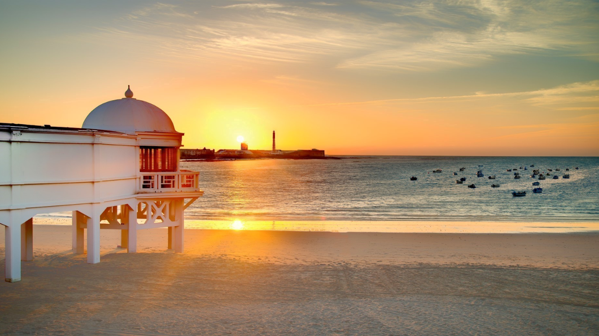

Localizaciones
Catedral
Icono barroco con vistas al Atlántico.
Barrio de la Viña
Alma marinera de Cádiz, famoso por su carnaval y su ambiente auténtico.


Playa de la Caleta
Atardeceres únicos en una playa histórica.
San Juan de Dios
Corazón histórico de Cádiz, con su ayuntamiento y ambiente vibrante.

¿Te animas?
Perderse por las calles de Cádiz es como adentrarse en un cuadro lleno de luz y sal. Cada rincón te sorprende con balcones llenos de flores, fachadas de colores cálidos y el eco de las olas acompañándote siempre de fondo. Aquí, el tiempo parece detenerse mientras descubres pequeñas plazas con encanto, bares de tapas que huelen a mar y a historia, y calles tan estrechas que casi puedes tocar las dos paredes a la vez. Cádiz te invita a caminarla, a vivirla, y a dejarte llevar por su magia.